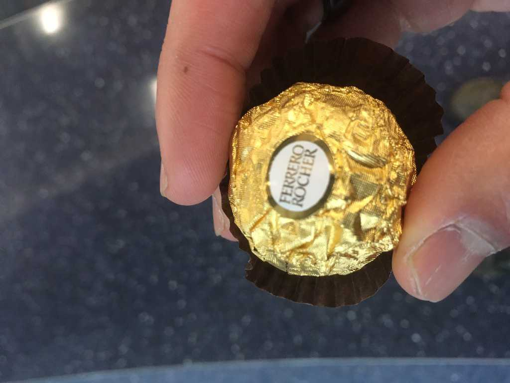

Emma
In the airport, a young child from China sitting across me is working on a puzzle.
I watch as she pieces the parts together, then realize she’s missing the last one. It’s unclear if she herself has noticed yet, but I can’t help and feel that this is a manifestation of something that’s been on my mind. Something that seems incomplete, lacking clarity, but I’m unsure as to what.
Defeated, she scrambles back to her bag and turns her attention to her journal as I write in mine. Moments later, I find her sitting next to me, and she peeps a shy hi. I put aside my journal and greet her back, and she begins to show me pictures from her recent trip to Disneyland.
Her shyness quickly gives way to her colorful enthusiasm as she leafs through the pages, pointing out details about the Animal and Magic Kingdom, telling me stories about what this and that princess was like (“The one with long hair, Rapunzel!”), painting me a beautiful picture of how she views and experiences life. She asks me, “Do you know what kind of shoes he wears?”, referring to the boots of an icy character pasted in her journal. “Slippers!”
She asks about my journal – which she claims is a diary – and where home is for me. She asks if Santa gave me the guitar I am currently carrying, and if I’ve been good or bad, or both. I tell her mostly good, and that Santa doesn’t believe in perfection anyways. She asks if I think Santa is real, how many diaries I have, how many pages I’ve written in it, and what I like to write about. The questions are endless, and so is the joy.
A notification tells me my flight is departing from a different gate, and I tell her I have to go.
“Where are you going?”
“Vermont, home.”
“Oh. What’s it like there?”
“Cold right now, but it’s a nice place.”
“Where I’m from it’s really hot!”
“Where I’m from we need some of that right now,” I reply with a smirk.
She rummages through her bag and pulls out a small piece of chocolate wrapped in gold foil. “It’s not very healthy, but at least there’s an almond in the middle. Here! It’s one of my favorites.”
I take it, thank her, and leave with hesitation as the hand of urgency moves me forward. Walking away, I look back and see her quiet father smiling at me.
The missing piece to my puzzle has not been yet found. But I did gain something else, something even better than the answers ever could be: presence, unadulterated wonder, brief entrance to the wild landscapes that defined a child’s world, friendship.
Thanks little Emma.
